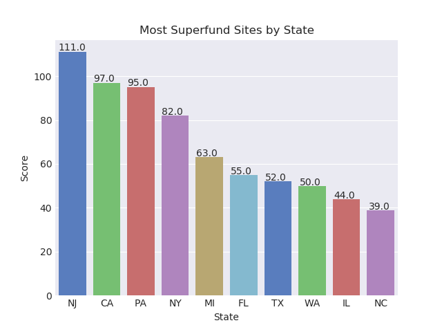
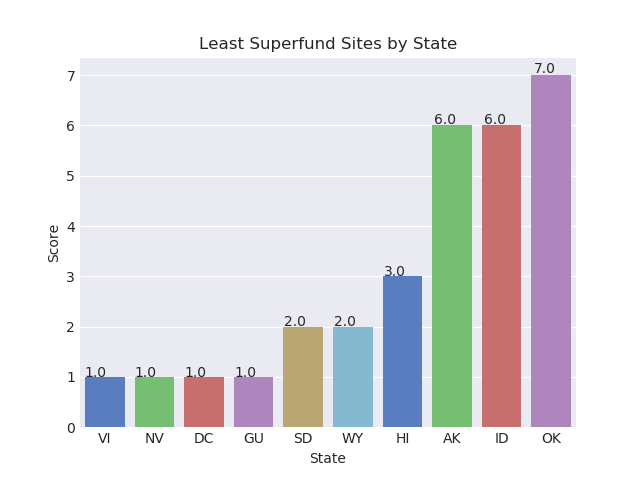
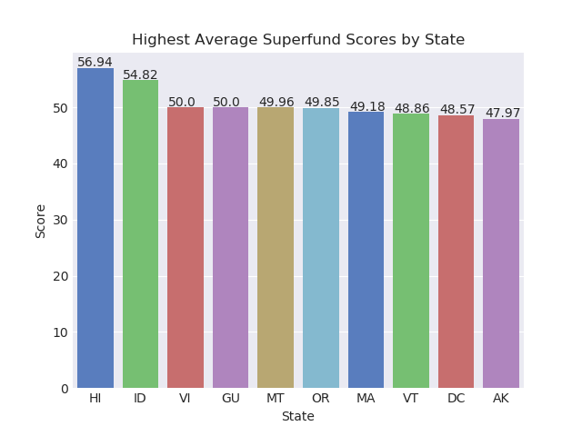
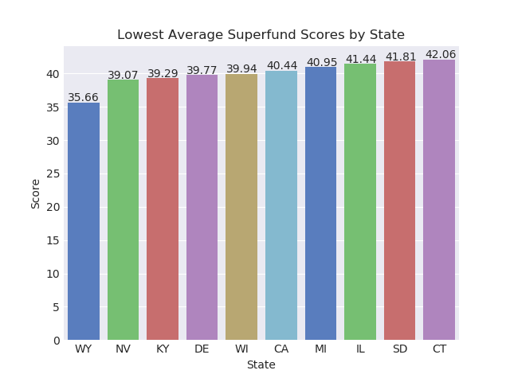
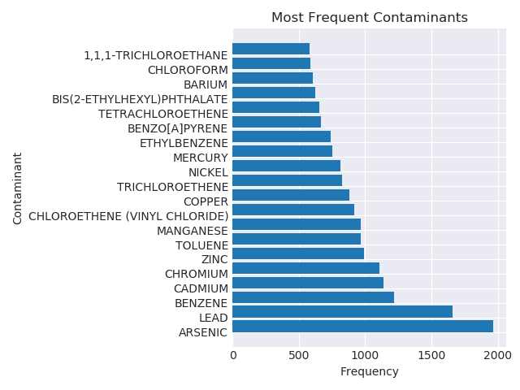
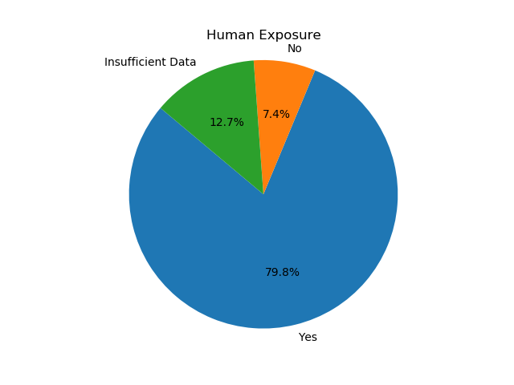
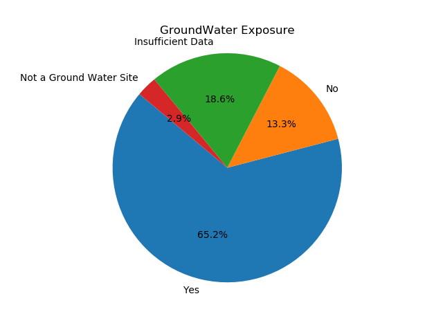
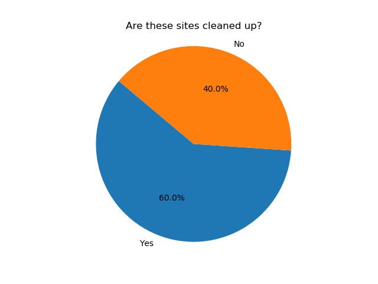
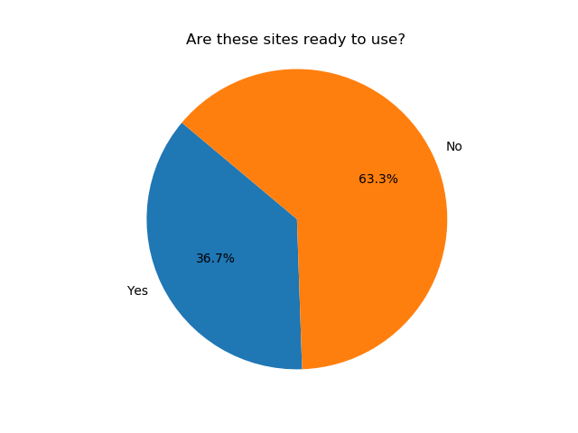

U.S. Superfund Sites
Most Superfund Sites per State

Least Superfund Sites per State

Highest Average Superfund Scores per State

Lowest Average Superfund Scores per State

Most Frequent Contaminant

Is the site safe for human exposure?

Has the Groundwater at this site been stabilized to an acceptable level?

Have these sites been cleaned up?

Are these sites ready to be used?
